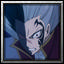

Player profile
greenoptic
Rank #1server.eurobattle.netSeason 2
Most played · V バージルースパーダの息子
Matches54 wins · 1 losses
Win rate80%
Avg K / D / A46.2 / 33.2 / 9.2
Avg APM153
Avg damage dealt308.8k
Avg damage taken190.2k
Heroes played
Explore heroes →| HERO | MATCHES | WIN RATE | AVG K / D / A | AVG DMG |
|---|---|---|---|---|
V バージルースパーダの息子Most played | 1 | 100% | 41.0 / 33.0 / 10.0 | 269.3k |
仮面ライダークロノス | 1 | 100% | 52.0 / 28.0 / 6.0 | 307.5k |
仮面ライダーエボルブラックホールフォーム | 1 | 100% | 52.0 / 36.0 / 12.0 | 352.8k |
The Last Future of Embryo | 1 | 100% | 48.0 / 36.0 / 11.0 | 342.5k |
 Future Depresesd Niggas | 1 | 0% | 38.0 / 33.0 / 7.0 | 271.7k |
Averages use recorded statistics only; unavailable historical values are shown as —.
Recent matches
Open a match for its scoreboard and kill matchups.
LOSS62:32
MCB #1000062
23 Oct 2026 · 23:20 WIB
38.0 / 33.0 / 7.0View match →
WIN61:43
MCB #1000061
23 Oct 2026 · 22:10 WIB
41.0 / 33.0 / 10.0View match →
WIN64:34
MCB #1000060
23 Oct 2026 · 20:47 WIB
52.0 / 28.0 / 6.0View match →
WIN76:34
MCB #2000168
21 Oct 2026 · 23:07 WIB
52.0 / 36.0 / 12.0View match →
WIN72:46
MCB #2000167
21 Oct 2026 · 20:35 WIB
48.0 / 36.0 / 11.0View match →